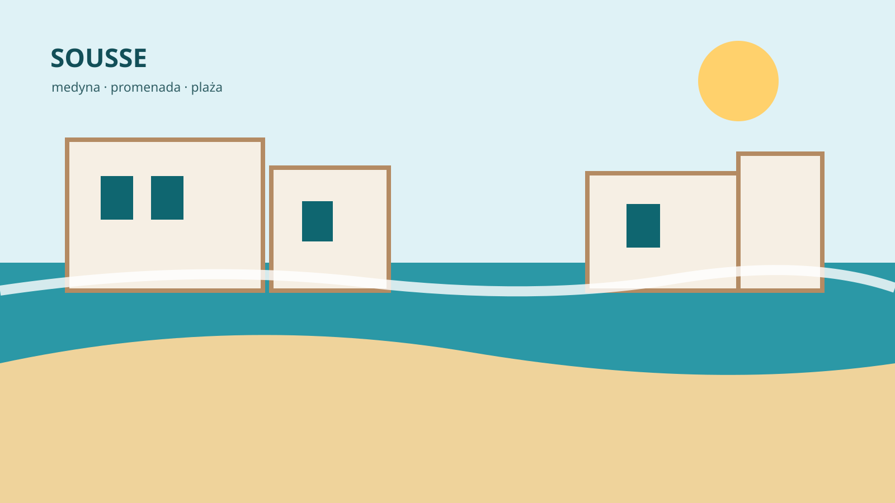

Sousse · Tunezja
Sousse: plaża i miasto w jednym kierunku
Sousse jest dobrym wyborem dla osób, które chcą korzystać z hotelu i morza, ale wieczorem wolą mieć miasto, medynę i restauracje w zasięgu ręki.
Sousse czy typowy kurort?
Sousse ma bardziej miejski charakter niż wiele tunezyjskich stref hotelowych. To oznacza więcej ruchu i codziennego życia, ale też więcej możliwości samodzielnego spędzania czasu. Można rano plażować, a później przejść do medyny lub wybrać się na kolację poza hotelem.
Medyna i okolice centrum
Medyna jest jednym z najważniejszych punktów miasta. Wąskie uliczki, targi i historyczna zabudowa dają wyraźny kontrast wobec hotelowej części wybrzeża.
Port El Kantaoui i plaże
Na północ od Sousse leży Port El Kantaoui, bardziej uporządkowana strefa turystyczna z mariną i hotelami. To ciekawa opcja dla osób, które chcą mieć łatwy dostęp do Sousse, ale wolą spokojniejsze otoczenie.
Dla kogo Sousse będzie najlepsze?
Dla osób, które szybko nudzą się zamknięciem w dużym resorcie. Miasto daje więcej swobody i pozwala łatwiej łączyć plażowanie ze zwiedzaniem.